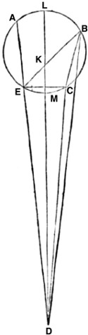
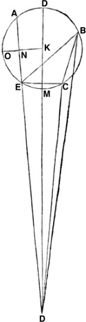
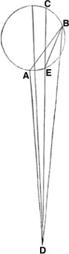
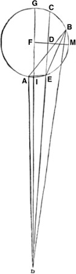
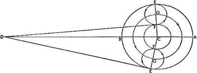
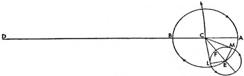
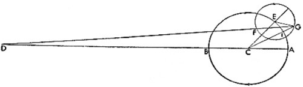
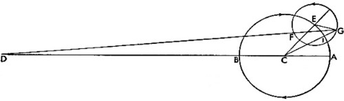

4. Ay'ın Devinimleri ve Ona Özgü Hareketler Üzerine

Bütün bunları, sayılar yoluyla gelecek kuşaklara aktarmayı düşünenler arasında 37. olimpiyat zamanında yaşamış Atinalı Meton da bulunuyordu. 19 Güneş yılında 235 tam ay olduğunu kaydetmişti; bu yüzden 19 yıllık büyük yıla, enneadekateris yılına, Metonicus yılı denmişti. Bu rakam Atina'da ve diğer ünlü şehirlerdeki forumlarda halk tarafından kullanılacak kadar uygundu; zira onun sayesinde ayların başının ve sonunun kesin bir sırayla saptanabileceğini ve 365,25 günlük bir Güneş yılının aylarla hesaplanabileceğini düşünüyorlardı. Bu yüzden 76 yıllık Calippus döneminde Calippus yılı denilen 19 günlük bir ek söz konusuydu. Fakat Hipparchus dikkatli bir çalışmayla 304 yılda 1 tam gün fazlalık olduğunu ve Calippus yılının ancak Güneş yılı bir günün 1/300'ü kadar daha küçükken doğrulanabileceğini bulmuştu. Ve 3760 ay içeren bu yıla bazıları tarafından Hipparchus'un büyük yılı denmişti; ayrıklığın ve enlemin tekrarlanışları arandığında da yine Hipparchus daha ileri incelemeler yapmıştı. Dikkatli Ay tutulması gözlemlerini gerçekleştirdiği okumalarla karşılaştırıp Keldanilerden öğrendikleriyle birleştirerek ayrıklığın ve ayların devinimlerinin eşzamanlı olduğu vaktin 345 Mısır yılı 82 gün 1 saat olabileceğini hesap etti ve bu zaman diliminde 4267 tam ay ve 4573 ayrıklık devri söz konusuydu. Buna göre ayların sayısı günlere dönüştürüldü ve 126.007 gün ve bir ayın da 29 gün 31'50''8'''9''''20´'''' olduğu bulundu. Bu mantığa uygun olarak bir zaman dilimindeki hareket de anlaşılmış olur. Bu durumda 360ºlik dönüşün bir ayın günlerine bölümü Ay'ın günlük devinimini 12º11'26''41'''20''''18´''''lik toplamla ilişkili olarak ortaya koyar. Bunun 365'le çarpımı, 12 devinime ek olarak, 129º37'21''28'''29''''lik yıllık hareketi verir. Dahası 4267 ay ve 4573 ayrıklık devri, birbiriyle bileşik sayılar olarak verildiğinden, yani 17'nin genel ölçüsüne göre 4267 ayın 4573 ayrıklık devrine oranı en azından 251'in 269'a oranı olacağından ve Euclides'in onuncu kitabının XV. bölümünde de gösterildiği gibi, Ay'ın deviniminin bu orandaki ayrıklık hareketine oranını elde etmiş olacağız. Buna uygun olarak Ay'ın yıllık hareketini 269'la çarpıp sonucu 251'e böldüğümüzde ortaya çıkan sonuç 13 tam devinimdeki ayrıklığın yıllık hareketi olacaktır, yani 88º43'8''40'''20''''; buradan hareketle günlük hareket de 13º3'53''56'''29'''' olacaktır. Fakat devinim enlemde başka bir orana sahiptir. Buna göre ayrıklığın yinelendiği önceki zamanla uyumlu değildir; fakat Ay'ın aynı enleme sadece, her koşulda eskisine benzer ve eşit sonraki bir tutulmada döndüğünü anlarız; öyle ki her iki kararma da Ay'ın aynı bölümünde gerçekleşir, dahası büyüklük ve süre bakımından da ikisi birbirine eşittir. Ve bu, Ay'ın en yüksek ya da en alçak apsitten uzaklığı eşit olduğunda gerçekleşir. Buna göre Ay'ın eşit gölgeleri eşit zamanda geçtiği de anlaşılır. Bu durumda Hipparchus'a göre bu tarz bir geri dönüş 5458 ayda bir gerçekleşir; bu da enlemin 5923 devinimine karşılık gelir. Mantık gereğince, diğerlerinde olduğu gibi, enleme özgü hareketler yıl ve gün olarak belirlenmiş olur. Buna göre Ay'ın Güneş'ten hareketini 5923 ay ile çarpıp çıkan sonucu 5458'e böldüğümüzde, 13 devinimlik enlemde Ay'ın yıllık hareketini 148º42'46''49'''3''''; günlük hareketiniyse 13º13'45''39'''40'''' olarak elde ederiz. Hipparchus bunu Ay'ın düzenli hareketlerinin oranı olarak ifade etmişti ve ondan önce kimse daha yakın bir tahminde bulunmamıştı. Buna karşılık sonraki çağlar bu hareketleri tümüyle aynı rakamlarla açıklamamıştır. Ptolemaeus da Güneş'ten aynı ortalama hareketi Hipparchus gibi bulmuşsa da yıllık ayrıklık hareketi öncekine göre 1''11'''39'''' kadar eksik; enlemin yıllık hareketiyse 53'''4'''' kadar fazlaydı. Fakat artık Hipparchus'tan bu yana birçok yıl geçtikten sonra, ortalama bir yıllık hareketi 1''2'''49'''' kadar ve bir ayrıklık hareketini ise sadece 24'''49'''' kadar eksik bulmaktayız. Dahası enlemdeki harekette 1''1'''44'''' kadar bir fazlalık vardır. Ve bu yüzden Ay'ın düzenli hareketi, Dünya'nın hareketinden farklı olduğundan, 129º37'22''32'''40''''lık yıllık hareket; 88º43'9''5'''9''''lık ayrıklık hareketi ve enlemde 148º42'45''17'''21''''lık hareket olacaktır.

5. Yeniayda ve Dolunayda Gerçekleşen Ay'ın İlk Düzensizliğinin Gösterilmesi
Zamanımızda bilebileceğimiz kadarıyla Ay'ın düzenli hareketlerini ortaya koyduk. Şimdi de dış tekerleme eğrisi sayesinde göstereceğimiz düzensizliğin oranına ve eski matematikçilerin üçlü Ay tutulmalarına dair şaşırtıcı zekâlarını kullanmalarına sebep olan Ay'la Güneş'in kavuşum ve karşı konumlarında beliren ilk düzensizliğe değinmemiz gerekiyor. Ayrıca yine eskiler tarafından bizler için hazırlanan yolu izleyeceğiz; Ptolemaeus tarafından dikkatle gözlenen üç tutulmayı ele alıp bunları, zaten evvelden bahsetmiş olduğumuz düzenli hareketleri kontrol etmek ve doğru bir şekilde ortaya konmuşlar mı diye görmek için yine aynı dikkatle, diğer üç tutulmayla karşılaştıracağız. Bunları açıklarken eskileri taklit ederek Güneş'le Ay'ın ilkbahar ekinoksundan ortalama konumunu düzenli hareketi için kullanacağız; zira ekinoksların düzensiz devinmesinden ötürü oluşan fark, böylesine kısa sürede, hatta 10 yılda bile algılanamaz. Buna uygun olarak Ptolemaeus ilk olarak, Hadrianus'un yönetiminin 17. yılında, Mısır takvimine göre Pauni ayının 20. gününden hemen sonra, İsa'nın doğumundan sonraki 133. yılda, Mayıs'ın 7'sinden önceki[150] yani 6. günündeki tutulmayı ele aldı. Bu bir tam tutulmaydı; tutulma sürecinin ortası İskenderiye'de gece yarısından önceki ilk saatin çeyreğine; Frauenburg'da veya Krakow'da ise takip eden 7. günün gece yarısından bir saat çeyrek dakika öncesine denk geliyordu; Güneş, Boğa'nın 12,25ºsinde fakat ortalama harekete göre yine Boğa'nın 12º21'sındaydı. İkinci tutulmanın ise Hadrianus'un yönetiminin 19. yılında, dördüncü Mısır ayı olan Chiach'ın iki günü geçtiğinde; İsa'nın doğumundan sonraki 134. yılda, Kasım'ın başlangıcından[151] üç gün önce meydana geldiğini söyler.
Burada çapın kuzeyden itibaren altıda beşini karartan bir tutulma söz konusuydu. Tutulmanın ortası İskenderiye'de gece yarısından önceki bir ekvatoral, Krakow'da yine gece yarısından önceki iki ekvatoral saate denk geliyordu; Güneş de Terazi'nin 251/6ºsinde fakat ortalama harekete göre yine Terazi'nin 26º43'sındaydı. Üçüncü tutulma ise Hadrianus'un yönetiminin 20. yılında, sekizinci Mısır ayı, yani Pharmuthi'de 19 gün geçtikten sonra, İsa'nın doğumundan sonraki 135. yılda, Mart'ın 6. günü geçtiğinde meydana gelmişti. Ay'ın yine kuzeyden çapının yarısı kadarı gölgede kalmıştı. Tutulmanın ortası İskenderiye'de gece yarısından önceki dört ekvatoral saate, Krakow'da ise yine gece yarısından sonraki üç ekvatoral saate denk geliyor; bu da Mart'ın yedinci gününün sabahı oluyordu.

Bu zamanda Güneş, Balık'ın 141/12ºsinde fakat ortalama hareketine göre yine Balık'ın 11º44'sında bulunuyordu. Bu durumda anlaşılıyor ki birinci ve ikinci tutulma arasındaki sürede Ay görünen hareketinde, tam çevrimleri saymazsak, Güneş'in görünen hareketi kadar, yani 161º55'; ikinci ve üçüncü tutulma arasındaki sürede ise 138º55' kadar mesafe kat eder. Bu durumda ilk aralıkta görünen zamana göre 1 yıl 166 gün 23,75 saat, düzeltilmiş zamana göre 23,625 saat vardı; ikinci aralıkta ise kabaca 1 yıl 137 gün 5 saat, düzeltilmiş olarak da 5,5 saat vardı. İlk aralık boyunca Güneş'in ve Ay'ın hesaplanan düzenli hareketi, tam çevrimleri saymazsak, 169º37' olup ayrıklık hareketi de 110º21'ydı; ikinci aralıkta ise benzer şekilde Güneş'in ve Ay'ın düzenli hareketi 137º34' olup ayrıklık hareketi de 81º36'ydı. Buna göre ilk aralık boyunca dış tekerleme eğrisinin 110º21'sının Ay'ın ortalama hareketinden farkı 7º42'yken ikinci aralıkta dış tekerleme eğrisinin 81º36'sına 1º21' eklenirdi. Bizden öncekilerin bütün bu anlattıklarına uygun olarak Ay'a özgü bir ABC dış tekerleme eğrisi çizilsin; Ay'ın ilk tutulması A'da, ikincisi B'de ve üçüncüsü de C'de olsun; yukarıdaki tertibe göre Ay'ın geçişinin batıya doğru olduğu anlaşılır. AB yayı 110º21'ya eşit olsun; buna göre çıkarmayla AB yayı 7º42'ya eşit olur; yukarıda da söylediğimiz gibi, BC yayı 81º36'ya eşit olsun, buna göre yapılan eklemeyle BDC 1º21' olur. Dairenin geri kalan kısmında ise, CA yayı 168º3'ya eşittir; bu, diğer eşitlemeye eklenir, yani CDA yayı 6º21' olur. Ekliptikte AB yayı 7º42'ya eşit olduğundan, ADB açısı da, iki dik açı 180ºyi verirken 7º42'ya eşittir. Fakat ADB açısı, 2 dik açı 360ºyi verirken 15º24'ya eşittir. Hem bir çevre açı hem de BDE üçgeninin bir dış açısı olarak AEB açısı 110º21'ya eşittir; buradan hareketle EBD açısı da 94º57'ya eşittir. Fakat açıları belirlenen üçgenlerin kenarları da belirlenir: O halde üçgeni çevreleyen çemberin çapı 200.000 birimken; DE, 147.396; BE, 26.798 birimdir. Yine, ekliptik üzerinde, AEC yayı 6º21'ya; 2 dik açı 180ºyi verirken EDC açısı da 6º21'ya eşittir. Fakat 2 dik açı 360ºyi verirken EDC açısı 12º42'ya, AEC açısı 191º57'ya eşittir. Ve ECD açısı, CDE açısının AEC açısından farkına, yani 179º15'ya eşittir. O halde kenarlar belirlenmiş olur: Üçgeni çevreleyen çemberin çapı 200.000 birimken DE, 199.996 birim ve CE 22.120 birimdir. Fakat CE 16.302 birim, DE 147.396 birimken, BE de 26.798 birime eşittir. Yine BEC üçgeninde BE ile EC kenarları belirlenmiş olduğundan ve CEB açısı, 81º36'ya eşit olduğundan BC yayı da 81º36'ya eşittir: Buradan hareketle doğrusal üçgenlerle ilgili kanıtlar yoluyla BC kenarının 17.960 birim olduğu bulunur; fakat dış tekerleme eğrisinin çapı 200.000 birim ve BC yayı, 81º36' olduğu için, BC kirişi de 130.684 birimdir. Ve belirlenen orana göre ED 1.072.684, CE de 118.637 birim; CE yayı da 72º46'10''dir. Fakat tasarıma göre CEA yayı, 168º3'dır. O halde çıkarmayla EA yayının 95º16'50''; EA kirişinin de 147.786 birim olduğu bulunur. Bu durumda toplamayla, AED çizgisinin de 1.220.470 birim olduğu bulunur. Fakat EA dilimi bir yarım daireden küçük olduğu için, dış tekerleme eğrisinin merkezi onda değil ABCE'de olacaktır. Bu yüzden K merkez olsun ve DMKL her iki apsit boyunca çizilsin ve L en yüksekteki, M de en alçaktaki apsit olsun. Bu durumda Euclides'in üçüncü kitabının XXXVI. bölümünde de gösterildiği gibi AD, DE çarpımı LD, DM çarpımına eşittir. Bu durumda dairenin çapı olan ve kendisine düz bir çizgiyle DM'nin eklendiği LM, K'de kesilir; buna göre LD, DM çarpımı ile KM'nin karesinin toplamı DK'nin karesini verir. O halde KL, 100.000 birimken DK 1.148.556 birimdir; buradan hareketle DKL 100.000 birimken LK 8.706 birimdir ve dış tekerleme eğrisinin yarıçapıdır. Bu belirtildikten sonra KNO, AD'ye dik olarak çizilsin. LK 100.000 birimken; KD, DE ve EA'nın birbirine oranları bilindiğinden ve NE, AE'nin yarısına, yani 73.893 birime eşit olduğundan, toplamayla DEN 1.146.577 birim olur. Fakat DKN üçgeninde DK ve ND kenarları bilindiğinden ve N açısı 90º olduğundan; merkezde, NKD açısı da MEO yayı da 86º38,5' olur. Buradan hareketle LAO yayı, 180ºnin NEO yayından farkına, yani 93º21,5'ya eşittir. O halde OA yayı, AOE yayının yarısına, yani 47º38,5'ya; LA yayı da LAO yayının O yayından farkına, yani 45º43'ya eşittir; bu, Ay'ın ilk tutulmada dış tekerleme eğrisinin en yüksek apsitten mesafesi ya da ayrıklığın konumudur. Fakat AB yayı, 110º21'ya eşittir.

Buna uygun olarak, çıkarmayla LB yayının 64º38' olduğu bulunur; bu aynı zamanda ikinci tutulmadaki ayrıklıktır. Toplamayla, üçüncü tutulmanın gerçekleştiği LBC yayının 146º14' olduğu bulunur. Böylelikle, dört dik açı 360ºyi verirken, DKN açısı 86º38,5'ya eşit olduğundan KDN açısının, 90ºnin DKN açısından farkına, yani 3º21,5'ya eşit olduğu anlaşılmış olacaktır ve bu, ayrıklığın ilk tutulmada eklediği eşitlemedir. Bu durumda ADB açısı 7º42'ya eşittir; bu yüzden çıkarmayla, LB yayının ikinci tutulmada Ay'ın düzenli hareketinden çıkardığı LDB açısının 4º20,5' olduğu anlaşılır. Ve BDC açısı 1º21'ya eşit olduğundan, yapılan çıkarmayla CDM açısının 2º49'ya eşit olduğu bulunur; bu, üçüncü tutulmada LBC yayının eksiltici eşitlemesidir. Buna göre Ay'ın, yani K merkezinin ortalama konumu ilk tutulmada Akrep'te 9º53'ydı; zira bunun görünen konumu da Akrep'te 13º15'daydı ve Güneş, Boğa'da çapa göre karşı konumda bulunuyordu. Buna göre Ay'ın ortalama hareketi ikinci tutulmada Koç'un 29,5ºsinde; üçüncü tutulmada ise Başak'ın 17º4'sındaydı. Dahası Ay'ın Güneş'ten düzenli uzaklığı ilk tutulmaya göre 177º33'; ikinci tutulmaya göre 182º47' ve son olarak üçüncü tutulmaya göre 185º20'ydı. Ptolemaeus'a göre böyleydi; şimdi onun örneğinden hareketle, tarafımızdan dikkatle gözlemlenen Ay'ın üçlü tutulmasını irdeleyelim. İlki İsa'dan sonra 1511 yılında, 6 Ekim'den sonra gerçekleşmişti. Ay, gece yarısından önceki 1,125 saat içinde tutulmaya başladı ve yine gece yarısından sonraki 2,3 saat içinde tümüyle eski haline geri döndü; bu şekilde tutulmanın tam ortası gece yarısından sonraki 7/12 saate, ertesi günün, yani 7 Ekim'in sabahına denk geldi. Tüm bu tutulma, Güneş Terazi'nin 22º25'sında fakat düzenli hareket Terazi'nin 24º13'sındayken gerçekleşmiş oldu. İkinci tutulmayı İsa'dan sonra 1522 yılının Eylül ayında 5 gün geçtikten sonra gözlemledik. Bu tam bir tutulmaydı ve gece yarısından önceki yarım saatte başladı fakat tam ortası yine 6. günü, yani Eylül'ün 13. gününden önceki 8. günü izleyen gece yarısından sonraki 1,3 saate denk geldi. Güneş, Başak'ın 22,2ºsinde fakat düzenli hareketine göre Başak'ın 23º59'sındaydı. Üçüncü tutulmayı ise İsa'dan sonra 1523 yılında, 25 Ağustos'a bağlanan gecede gözlemledik. Tutulma gece yarısından sonraki 2,8 saatte başladı; bir tam tutulmaydı ve ortası Eylül'ün başından itibaren 7. günün öncesindeki gece yarısından sonraki 45/12 saate denk geldi. Güneş, Başak'ın 11º21'sındaydı fakat ortalama hareketine göre yine Başak'ın 13º2'sındaydı. Ve burada Güneş ile Ay'ın hakiki konumları arasında ilk tutulmadan ikinci tutulmaya kadarki mesafe 329º47', ikinciden üçüncüye kadarki mesafe ise 349º9'ydı. Bu durumda ilk tutulmadan ikinci tutulmaya kadar geçen süre, görünen zamana göre 10 eşit yıl 337 gün 3/4 saat; düzeltilmiş eşit süreye göreyse 4/5 saatti. İkinci tutulmadan üçüncü tutulmaya kadar geçen süre ise 354 gün 3 saat 5 dakika; eşit süreye göreyse 3 saat 9 dakikaydı. İlk aralık boyunca Güneş ile Ay'ın hesaplanan ortalama hareketi, tüm çevrimler sayılmadan, 334º47'; ayrıklığın hareketi ise 250º36'ydı; düzenli hareketten yaklaşık olarak 5º az; ikinci aralıkta ise Güneş ile Ay'ın ortalama hareketi 346º10'; ayrıklık hareketi ise 306º43', yani ortalama hareketten 2º59' fazlaydı. Buna uygun olarak ABC, dış tekerleme eğrisi olsun ve A, ilk tutulmanın; B ikinci tutulmanın, C de üçüncü tutulmanın ortasında Ay'ın konumu olsun. Dış tekerleme eğrisinin hareketinin C'den B'ye, yani yukarıdan batıya ve B'den de A'ya, yani aşağıdan doğuya doğru olduğu anlaşılsın. ACB yayı 250º36'ya eşittir ve söylediğimiz gibi, sürenin ilk aralığı boyunca ortalama hareketten 5º azdır.
Fakat BAC yayı, Ay'ın ortalama hareketinden 2º59' fazla olan 306º43'ya eşittir; buna uygun olarak yapılan çıkarımla AC yayının 197º19' olduğu bulunur. Fakat AC yayı, bir yarım çemberden daha büyüktür ve çıkartılacak olandır; en yüksek apsidi de içermek durumundadır. Buna göre en yüksek apsit, bir yarım çemberden daha küçük ve eklenecek olan BA ya da CBA yaylarında olamaz; fakat daha küçük olan hareket yeröteyle belirlenir. O halde D, Dünya'nın merkezine göre karşı konum olarak alınsın ve AD, DB, DEC, AB, AE ve EB de eklensin. Bu durumda DBE üçgeninde CEB dış açısı 53º17'dır; zira CEB açısı CB yayını keser ve CB yayı da 360ºnin BAC yayından farkına eşittir. BDE merkez açısı 2º59', BDE çevre açısı 5º58' olduğundan, bu durumda çıkarma işlemiyle EBD açısı 47º19'ya; bu nedenle üçgenin çevreleyen çemberin yarıçapı 10.000 birimken BE kenarı 1042; DE kenarı da 8024 birime eşit olur. Benzer şekilde çemberin AC yayındaki AEC açısı 197º19', merkezdeki ADC açısı 2º1'; fakat ADC çevre açısı 4º2'dır; bu durumda çıkarma işlemiyle iki dik açının 360ºyi verdiği durumda DAE açısı, 193º17'dır. Buna göre ADE üçgenini çevreleyen çemberin yarıçapı 10.000 birimken kenarlar da bulunur: AE, 702; DE, 19.805 birimdir; fakat DE, 8024; AE, 283 birimken; BE 1042 birimdir. Buna göre bir kez daha, AE ve EB kenarlarının belirlediği ABE üçgenini elde etmiş olacağız ve AEB açısı, iki dik açı 360ºyi verirken, 250º36'dır. Düzlem üçgenlerle ilgili olarak da gösterdiğimiz gibi, EB 1042 birimken, AB 1227 birimdir. O halde bu yolla AB, EB ve ED çizgilerinin oranını buluruz ve buradan hareketle dış tekerleme eğrisinin yarıçapının 10.000 olduğu durumda AB kirişi 16.323; ED 106.751 ve EB kirişi 13.853 birimdir. Bu nedenle EB yayı, 87º41'ya ve EBC yayı, EB yayıyla BC yayının toplamına, yani 140º58'ya; CE kirişi, 18.851 birime eşittir. Toplamayla CED de 125.602 birime eşittir. Bu durumda dış tekerleme eğrisinin merkezi ortaya konsun; bir yarım çemberden daha büyük olduğu için kaçınılmaz olarak EAC dilimine inecektir. F de merkez olsun ve DIFG en alçağı I, en yükseği G olan apsitlerin ikisinden de geçecek şekilde düz bir çizgiyle uzatılsın. Yine açıktır ki; CD, DE çarpımı GD, DI çarpımına eşittir. Fakat GD, DI çarpımıyla FI'nın karesinin toplamı DF'nin karesini verir. Buna göre FG 10.000 birimken, DIF 116.226 birimdir. Buna göre DF 100.000 birimken FG 8604 birimdir. Bu bulduğumuz da Ptolemaeus'tan beri öncüllerimizin çoğu tarafından kaydedilmiş bilgilere uygundur. Bu durumda FL, F merkezinden EC'ye dik olarak çizilsin ve FLM düz çizgisiyle uzatılsın; böylece I noktasında CE'yi kesecektir. Buna göre ED çizgisi, 106.751 birimken CE'nin yarısı LE'ye, o da 9426 birime eşittir; o halde yapılan eklemeyle FG 10.000, DF 116.226 birimken, DEL'nin 116.177 birim olduğu bulunur. O halde DFL üçgeninde DF ve DL kenarları belirlenir; DFL açısı, 88º21'dır; çıkarmayla FDL açısı 1º39' ve benzer şekilde IEM yayı 88º21' ve MC yayı EBC yayının yarısı, yani 70º29' olarak bulunur. Buna göre yapılan toplamayla IMC yayının 158º50', GC yayının da 180ºnin IMC yayından farkına, yani 21º10'ya eşit olduğu bulunur. Bu aynı zamanda Ay'ın dış tekerleme eğrisinin yerötesinden uzaklığı ya da üçüncü tutulmada ayrıklığın konumudur. İkinci tutulmada IDB açısı, 4º38'dır; bu yine eksiltici eşitlemedir; zira IDB açısı, GDC ile CDB açılarının toplamına, yani 1º39' ile 2º59'nın toplamına eşittir. Ve buna uygun olarak ADI açısı, ADB açısının IDB açısından farkına, yani 5ºnin 4º38'dan farkı olan 22'ya eşittir; bu da ilk tutulmada düzenli harekete eklenir. Bu nedenle Ay'ın ilk tutulmadaki düzenli hareketinin konumu Koç'un 22º3'sında; görünen hareketin konumu ise 22º25'daydı; Güneş de Terazi'nin aynı derecesinde, karşı konumdaydı. Bu yolla aynı zamanda Ay'ın ikinci tutulmadaki ortalama konumu Balık'ın 26º50'sında, üçüncü tutulmada ise yine Balık'ın 13ºsindeydi ve ortalama konumu Dünya'nın yıllık hareketinden ayıran ortalama Ay hareketi ilk tutulmada 177º50'da, ikinci tutulmada 182º51'da, üçüncü tutulmada ise 179º58'daydı.
6. Ay'ın Boylamdaki Ayrıklık Hareketlerine Dair Yapılan Açıklamaların Doğrulanması

Dahası, Ay tutulmalarına dair ortaya konan tüm bu bilgiler sayesinde Ay'ın düzenli hareketlerine dair anlattıklarımızı da doğru bir şekilde kontrol etmek mümkün olacaktır. Buna göre iki tutulmadan ikincisinde Ay'ın Güneş'ten uzaklığının 182º47', ayrıklık hareketinin ise 64º38' olduğu gösterilmişti; oysa zamanımızda gerçekleşen iki tutulmadan ikincisinde Ay'ın Güneş'ten hareketi 182º51'; ayrıklık hareketi ise 74º27'ydı. Aradaki zaman diliminde 17.166 tam ay, 4'lık hareket ve tüm çevrimler sayılmadan, 9º49'lık ayrıklık hareketi bulunduğu açıktır. Bu durumda Hadrianus'un[152] 19. yılında, Mısır ayı Chiach'ın 2. gününü 3. gününe bağlayan gece yarısından 2 saat önce gerçekleşen tutulma ile İsa'nın doğumunun 1522. yılında, Eylül ayının 5'inde, gece yarısından sonraki 11/3 saatte gerçekleşen tutulma arasında, görünen zamana göre 1388 Mısır yılı 302 gün 31/3 saat, düzeltilmiş haline göreyse gece yarısından sonra 3 saat 34 dakika fark vardır. Ptolemaeus ile Hipparchus'a göre eşit ayların toplam 17.165 deviniminden sonraki zamanda Güneş'ten itibaren hareket 359º38'ydı. Ayrıklık hareketi Hipparchus'a göre 9º39'yken, Ptolemaeus'a göre 9º11'ydı. Buna uygun olarak Hipparchus ile Ptolemaeus tarafından hesaplanan Ay'ın Güneş'ten hareketi 26', yine Hipparchus ile Ptolemaeus tarafından hesap edilen ayrıklık hareketi 38' eksiktir. Bu dakikalar bizim gözlemlediğimiz hareketlerde artış göstermekle birlikte, ortaya koymuş olduğumuz rakamlarla da bağdaşır.
7. Ay'ın Boylamdaki ve Ayrıklıktaki Konumları Üzerine

Burada, yukarıda olduğu gibi, bunlardan bahsedeceğiz ve olimpiyatların takvim yıllarındaki, İskender'in, Caesar'ın, İsa'nın ya da dilenen başka birinin yıllarındaki ilan edilen başlangıçlara göre konumları belirleyeceğiz. O halde eski tutulmalardan Hadrianus'un 19. yılında, Mısır ayı olan Chiach'ın 2. gününde, İskenderiye'de gece yarısından önceki bir ekvatoral saatte; buna karşılık bize göre Krakow meridyeninin altında gece yarısından önceki iki saatte beliren ikincisine bakarsak, İsa takviminin başlangıcından bu harekete kadar 133 Mısır yılı 325 gün ve kabaca 22 saat; fakat düzeltilmiş haline göre 21 saat 37 dakika vardır. Hesabımıza göre Ay'ın bu zaman boyunca süren hareketi 332º49'; ayrıklık hareketi ise 217º32'ydı. Tutulma hususunda elde edilen bulgulardan çıkarıldıklarında, her biri için İsa takviminin başlangıcında, Ocak ayının ilk gününden önceki gece yarısında, Ay'ın Güneş'ten ortalama konumu olarak 209º58'; ayrıklık konumu olarak ise 207º7' elde edilir. Yine 1. olimpiyattan İsa takviminin başlangıcına kadar 193 olimpiyat, 2 yıl 194,5 gün, yani 775 Mısır yılı 12,5 gün; fakat düzeltilmiş haline göre 12 saat 11 dakika vardır. Benzer şekilde İskender'in ölümünden İsa'nın doğumuna kadar görünen zamana göre 323 Mısır yılı 130,5 gün olduğunu bulmuşlardı; fakat bu, düzeltilmiş haline göre 12 saat 16 dakikaydı. Ve Caesar'dan İsa'ya kadar 45 Mısır yılı 12 gün vardır ve burada eşit ve görünen zamanın oranları uyumludur. Buna uygun olarak İsa'nın doğumundaki konumlarından itibaren geçen süredeki hareketleri, teker teker çıkarırsak, 1. olimpiyattaki Hekatombaion ayının ilk gününün öğle vakti için Ay'ın Güneş'ten düzenli uzaklığının 39º43'; ayrıklık uzaklığının ise 46º20' olduğunu buluruz. İskender yıllarının başlangıcında, Thoth ayının ilk gününün öğle vaktinde Ay, Güneş'ten 310º44' uzaktaydı; ayrıklık hareketi de 85º41'ydı. Julius Caesar takviminin başında, Ocak ayının başlangıcından önceki gece yarısında Ay, Güneş'ten 350º39' uzaktaydı ve ayrıklık hareketi 17º58'ydı. Bütün bunlar Krakow'un bulunduğu meridyene göredir. Her iki konumda gözlemlenen Güneş ile Ay tutulmalarının aynı zamanda gerçekleşmesinin de bize öğrettiği gibi çoğu kere gözlemlerimizi gerçekleştirdiğimiz Vistula nehrinin ağzının konumlandığı Frauenburg ve antik dönemde Epidamnum denilen Makedonya'daki Dyrrhachium da yine bu meridyendedir.
8. Ay'ın İkinci Düzensizliği ve İlk Dış Tekerleme Eğrisinin İkincisine Oranı
Sonuç olarak bu şekilde Ay'ın ilk düzensizliğiyle birlikte düzenli hareketi de gösterilmiş oldu. Şimdi ilk dış tekerleme eğrisinin ikinci dış tekerleme eğrisine ve her ikisinin Dünya'nın merkezinin uzaklığına oranını inceleyelim. Fakat söylediğimiz gibi, düzenli ve görünen hareket arasındaki en büyük fark, yarımay büyürken ya da küçülürken, ortalama dördünde bulunur; bu da, eskilerin kayıtlarındaki gözlemlere göre 72/3º kadardır. Eskiler, yarımayın neredeyse dış tekerleme eğrisinin ortalama mesafesine vardığı ve Dünya'nın merkezinden geçen teğetin etrafında gezindiği zamanın gözlemlerini gerçekleştiriyordu; bu, yukarıda yaptığımız hesap sayesinde kolayca anlaşılabilir. O vakitler Ay, doğuşundan veya batışından ölçülen ekliptiğin 90ºsi civarında olduğundan, paralaksın boylamın hareketine hata ekleyebileceğinin farkındaydılar. Zira bu zamanda ufkun tepe açısından geçen çember ekliptiği dik olarak böler ve boylamda herhangi bir paralaksa yol açmaz; paralaks tümüyle enleme iner. Eskiler astrolabium sayesinde Ay'ın Güneş'e göre konumunu da belirlemiştir. Karşılaştırma yaptıklarında, Ay'ın düzenli hareketinden, söylediğimiz gibi, 5º değil de 72/3º kadar farklı olduğu bulunmuştur. Buna göre bir AB dış tekerleme eğrisi çizilsin, C de merkezi olsun. Dünya'nın merkezi D olsun ve ondan DBCA düz çizgisi uzatılsın.
Dış tekerleme eğrisinin yerötesi A, yerberisi B olsun ve dış tekerleme eğrisine teğet olarak DE çizilsin; CE de eklensin. Buna göre en büyük eşitleme teğette ve 7º40' olduğundan, buradan hareketle BDE açısı, 7º40', CED açısı ise 90ºdir. AB dairesinin teğet noktasında bulunduğundan CE, CD yarıçapı 10.000 birimken, 1334 birimdir. Fakat dolunayda bu daha kısaydı, yani CE yaklaşık 860 birimdi. Yine CE kesilsin ve CF 860 birim olsun. Yeniayın ve dolunayın bulunacağı F noktası aynı merkezin etrafında çember çizmiş olacaktır; buna göre çıkarmayla FE 474 birim olup ikinci dış tekerleme eğrisinin de çapıdır. FE, G merkezinde ikiye bölünsün ve toplamayla CFG 1097 birim ve aynı zamanda ikinci dış tekerleme eğrisinin merkezinin çizdiği çemberin yarıçapı olacaktır. Buna göre, CG'nin GE'ye oranı, CD 10.000 birimken, 1097 birimin 237 birime oranına eşit olur.

9. Ay'ın, Dış Tekerleme Eğrisinin En Yüksek Apsidinden İtibaren Düzensiz Hareket Ediyor Gibi Görünmesinden Doğan Diğer Fark Üzerine
Bu mantıkla Ay'ın ilk dış tekerleme eğrisinde nasıl hareket ettiği ve yarımay boynuz ya da kambur şeklinde olduğunda en büyük farklılığın nasıl oluştuğu anlaşılmış olur. Bir kere daha, AB, ikinci dış tekerleme eğrisinin merkezinin ortalama hareket boyunca çizdiği ilk dış tekerleme eğrisi; C bunun merkezi, A en yüksek apsidi, B de en alçak apsidi olsun.
E, yaydaki herhangi bir nokta olarak alınsın ve CE eklensin. Bu durumda CE'nin EF'ye oranı da, 1097 birimin 237 birime oranına eşit olur. Yarıçapı EF olan ikinci dış tekerleme eğrisi E merkezi etrafında çizilsin. Ve CL ile CM düz çizgileri, her iki kenarda ikinci dış tekerleme eğrisine teğet olsun. Küçük dış tekerleme eğrisinin hareketi, A'dan E'ye, yani yukarıdan batıya doğru; Ay'ın hareketi ise F'den L'ye, yani yine batıya doğru olsun. Buna göre AE hareketi düzenli olduğundan, ikinci dış tekerleme eğrisi FL hareketinin etkisiyle EL yayını düzenli harekete ekler, MF'nin etkisiyle de düzenli hareketten çıkartır. Fakat CEL üçgeninde L açısı 90º, CE 1097 birimken, EL 237 birim olduğundan; CE 10.000 birimken, EL 2160 birimdir. Tabloya göre EL, ECL'nin iki katını ayıran kirişin yarısına eşittir. Ve ECL açısı da MCF açısına eşittir; zira üçgenler benzer ve eşittir. Bu Ay'ın, ilk dış tekerleme eğrisinin en yüksek apsidinden hareketinde değişkenlik gösterdiği en büyük farktır ve Ay'ın ortalama hareketiyle Dünya'nın ortalama hareketinin çizgisinin her iki yanındaki mesafe 38º46' olduğunda belirir. Ve böylece bu, en büyük eşitlemelerin Güneş'le Ay arasında 38º46'lık ortalama mesafede ve ortalama karşılaşmanın her iki yanındaki aynı mesafede oluşmasını tam anlamıyla açığa kavuşturmuş olur.
10. Ay'ın, Görünen Hareketi Düzenli Hareketlerle Nasıl Gösterilir?
Bütün bunlar görüldükten sonra, artık şemalar yardımıyla Ay'ın düzenli ve görünen hareketlerinin bizden öncekiler tarafından gösterilen Ay hareketlerinden nasıl farklı olduğunu, örneğimizi Hipparchus'un gözlemleri arasından alarak göstermek istiyoruz; bu yolla kuramımız aynı zamanda deneyle de onaylanmış olacak. Buna uygun olarak İskender'in ölümünden sonraki 197. yılda, Mısır takvimindeki 10. ay olan Pauni'nin 17. gününde Rhodos'ta 9 1/3 saat geçtikten sonra Hipparchus, astrolabiumla gerçekleştirdiği Güneş'le Ay gözleminde aradaki mesafenin 48º6' olduğunu bulmuştu; ayrıca Ay, Güneş'in doğusundaydı. Hipparchus, Güneş'in konumunun, Yengeç'in 109/10ºsinde olduğunu düşündüğünden, Ay da Aslan'ın 29ºsinde olmalıydı. Bu zamanda Akrep'in 29ºsi yükseliyordu ve Başak'ın 10ºsi, 36º kuzey enlemindeki Rhodos üzerinde, göğün ortasındaydı. Bu bilgiye göre, meridyenden ekliptiğin 90ºsinde konumlanan Ay, yine bu zamanda görünürde ya da boylamda fark edilmeyen herhangi bir paralaksa yol açmamıştır. Fakat bu gözlem, 17. günün öğle vaktinden sonraki, Rhodos'ta 4 ekvatoral saate denk gelen 3 1/3 saatte yapılmıştı; bu, Krakow'da, Rhodos'u İskenderiye'den bize 60'ta 1'i kadar daha yakın kılan mesafeye uygun olarak öğlen vaktinden sonraki 31/6 ekvatoral saate denk geliyordu. Buna göre İskender'in ölümünden itibaren kabaca 196 yıl 286 gün 31/6 saat; fakat eşit zamana göre 31/3 saat geçmişti. Bu zamanda Güneş, ortalama hareketine göre Yengeç'in 12º3'sına; görünen hareketine göreyse yine Yengeç'in 10º40'sına varmıştı; bu yüzden Ay, gerçekte Aslan'ın 28º37'sında görünmüştü. Fakat aylık devinimine göre Ay'ın düzenli hareketi 45º9'daydı ve ayrıklık hareketi hesaplarımıza göre en yüksek apsitten 333º uzaklıktaydı. Bizden evvel ortaya konan bu örneğe uygun olarak ilkin AB dış tekerleme eğrisini çizelim. C merkezi, ACB çapı olsun; yine ACB, ABD gibi, düz bir çizgiyle Dünya'nın merkezine uzatılsın. Dış tekerleme eğrisinde, ABE yayı 333º olsun. CE de eklensin ve yine F de kesilsin; öyle ki EC, 1097 birimken, EF 237 birim olur. Merkezi E, yarıçapı EF olan dış tekerleme eğrisinin dış tekerleme eğrisi çizilsin. Ay, G noktasında olsun; FG yayı da Güneş'ten düzenli hareketin, 45º9'nın iki katı kadar, yani 90º18' olsun. CG, EG ve DG de eklensin.

Buna göre CEG üçgeninde iki kenar bulunmuş olur; CE 1097 birime, EG ise EF'ye, yani 237 birime, GEC açısı da 90º18'ya eşit olur; buna göre düzlem üçgenlerde gösterdiğimiz gibi CG kenarı 1123 birim, ECG açısı ise 12º11'dır. Bu sayede EI yayı hesaplanır, ayrıklık sayesinde de eklenecek eşitleme bulunur ve toplamayla ABEI yayı 345º11' olur. Çıkarmayla GCE açısı 14º49' olup bu, Ay'ın dış tekerleme eğrisinin en yüksek apsidinden hakiki mesafesidir; BCG açısı da 165º11'dır. Böylece GDC üçgeninde iki kenar da belirlenmiş olur; CD 10.000 birimken, GC 1123 birim; GCD açısı ise 165º11'dır. Buradan hareketle CDG açısı 1º29' olup bu, aynı zamanda Ay'ın ortalama hareketine eklenen eşitlemedir. Buna göre Ay'ın, Güneş'in ortalama hareketinden hakiki mesafesi 46º34', görünen konumu ise Aslan'ın 28º37'sında olup Güneş'in hakiki konumundan 47º57' uzaklıktadır. Hipparchus'un gözlemine göre burada 9'lık bir eksiklik söz konusudur. Her ne kadar küçük bir fark söz konusuysa da Hipparchus'un ya da bizim incelememizin hatalı olduğunun düşünülmemesi gerekir; yine de onun ya da bizim herhangi bir hata yapmadığımızı, aksine bunların olması gerekenler olduğunu göstereceğiz. Ay'ın izlediği yörüngenin eğik olduğunu hatırlarsak; onun ekliptikte, özellikle de enlemin güney ve kuzey sınırları arasında uzanan ortalama konumların etrafında, doğal günün düzensizliğiyle ilgili olarak açıkladığımız gibi, eğik ekliptikle ekvator arasındaki gibi hemen hemen aynı yolda, bir tür boylamsal düzensizlik yaratmış olduğunu da kabul edeceğiz. Böylece Ptolemaeus'un ekliptikle eğimli olduğunu kaydettiği oranları Ay'ın yörünge çemberine aktarırsak, oranların bu konumlarda ekliptikle alakalı olarak boylamda 7'lık bir farka –iki katı da 14'dır– neden olduğunu buluruz; fark orantılı olarak artıp azalmaktadır; zira Güneş ve Ay, bir dairenin çeyrekleri olarak birbirinden uzaktadır. Kuzey ve güney enlem sınırı onların ortasında bir konumda yer alırsa, ekliptikte kesilen yay, Ay çemberinin bir çeyreğinden 14' kadar büyük olacaktır; diğer taraftan ekliptik kesitlerinin böldüğü öteki çeyreklerde ekliptiğin kutuplarından geçen daireler bir çeyrekten çok daha küçük bir yayı keser. Günümüzdeki durum için de bu geçerlidir. Ay, enlemin güney sınırı ile yenilerin Ejderha'nın Başı dediği yükselen ekliptik kesiti arasındaki ortalama konumun civarında yer aldığından, Güneş de kuyruk denilen alçalan ekliptik kesitinden geçmiş olmalıdır; Ay'ın kendi yörünge çemberindeki 47º57'lık mesafesi ekliptiğe uyarlandığında, batıda alçalmakta olan Güneş'in hareketinin yol açtığı görünürdeki eksiltici paralaks dışında, en az 7' kadarlık artışın gerçekleşmesi şaşırtıcı değildir. Paralakslarla ilgili açıklamamızda bütün bu hususlara çok daha ayrıntılı bir şekilde değineceğiz. Ve böylece, Hipparchus'un alet yardımıyla 48º6' olduğunu tespit ettiği ışık saçan cisimlerin mesafesi, bizim hesabımıza kusursuz bir şekilde uymaktadır.